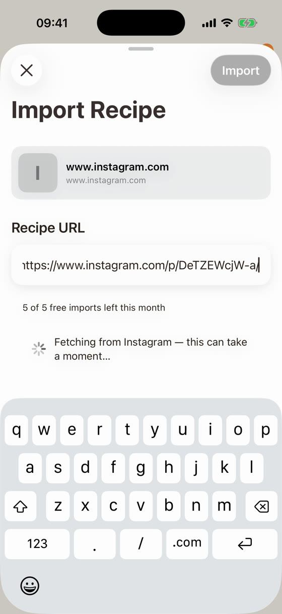
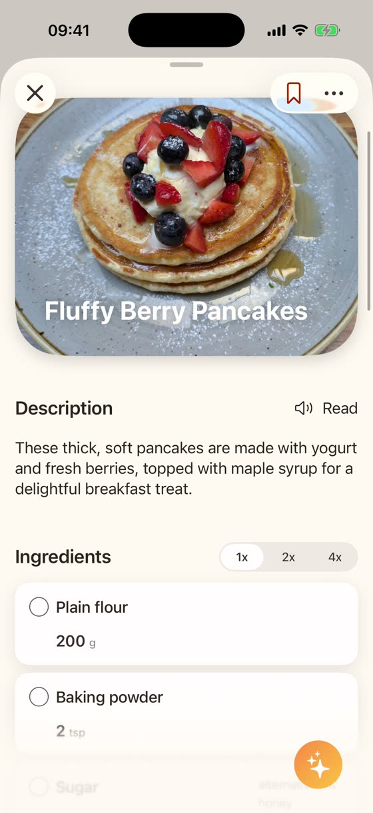

An app to save recipes from links, reels and cards
Links, posts and photos, together in one cookbook.
One recipe on a blog, one in a reel, one on a card in the kitchen drawer: paste the link or snap a photo, and ReciPics saves it to your cookbook on your iPhone. Your collection stays together, ready when you want to cook.



Real screens from the app. Examples: a recipe from our own site recipics.app and a post from our own account @recipics.
From wherever you found it
A food blog link, a reel, a cookbook page and grandma's handwritten card all end up in the same cookbook, with ingredients, amounts and steps laid out the same way. You paste a link or take a photo, and ReciPics does the typing.
Step by step for each source: Recipe websites · Instagram and TikTok · Cookbook pages · Handwritten cards
Why not just bookmarks and screenshots?
Bookmarks pile up in the browser, screenshots get lost among your photos, and a saved reel rarely lists the amounts in one place. A recipe saver app saves the recipe itself: ingredients with amounts, steps and servings, in one cookbook you can search. Recipes you clip from a link keep the link, so you can go back to the original page.
Which links work?
Many recipe websites and food blogs, especially those that show the recipe without a login. Some sites don't allow importing; the app tells you, and you can take a photo of the recipe or paste it as text instead. On Instagram and TikTok, public posts work best, and private accounts can't be imported.
What you can do with your saved recipes
- Find them in the Cookbook tab and search by recipe name or ingredient.
- Fix or change ingredients and steps.
- Scale servings (1x, 2x, 4x).
- Put the ingredients on your grocery list and tick them off in the shop.
- Send a recipe to someone as text or PDF.
ReciPics reads links and photos with AI, and AI can make mistakes. Compare a saved recipe with the original before you cook, especially amounts and temperatures, and check ingredients yourself for allergies or intolerances.
Keeping your family's recipes to pass them on? Family recipe book app
For new users without a paid plan, the number of link imports per month is limited. Each photo scan uses the app's AI allowance, which is limited without Premium. The app shows how many you have left.
To read a recipe, the link or the photo and the text recognized on your iPhone are sent to our servers and service providers, including OpenAI (USA); see the Privacy page.
ReciPics is not affiliated with, endorsed by or sponsored by Instagram, Meta or TikTok. Recipes, texts and photos belong to their authors, publishers or websites. Use ReciPics for your private cookbook only, and don't republish imported content. ReciPics is an independent app and is not affiliated with any other app called Recipe Keeper.
Get ReciPics on the App StoreFor iPhone with iOS 26 or later.
Questions
What is a recipe saver app?
An app that holds the recipes you collect from different places; some people call it a recipe keeper. In ReciPics you add a recipe by link or by photo, and it is saved with ingredients, amounts and steps, so you can search it, change it and cook from it.
Do I have to type up recipes from cards or books?
No. Take a photo of the card or the page and ReciPics reads the text. Go through the amounts afterwards, especially on handwritten cards, because AI can misread them.
How do I pass a saved recipe on to a friend?
Open the recipe and share it as text or PDF. Your friend can read it without the app.